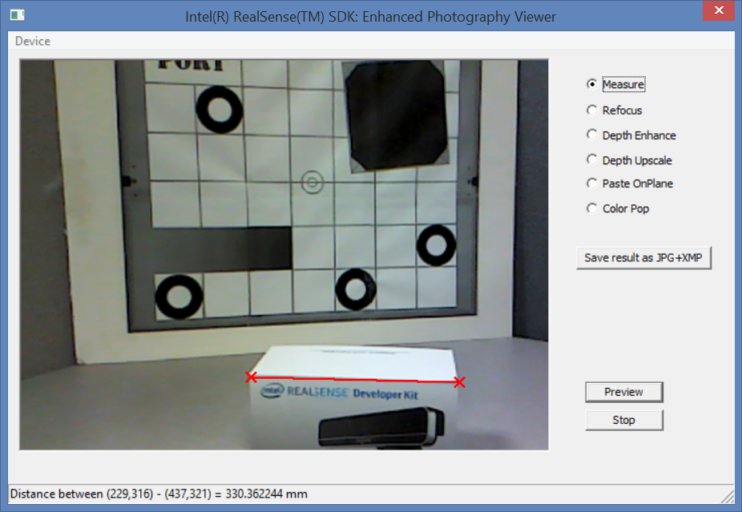

Sample: RF_EnhancedPhotography |
Top Previous Next |
|
Introduction The RF_DepthBlendEP sample is a C++ application that demonstrates the SDK photo processing features. The sample shows how to take a snapshot out of a live streaming frames, and then perform refocusing and distance measurement operations. Launch The sample can be launched directly from the bin folder of the SDK installation, or compiled and executed using Microsoft Visual Studio. The project and source files are located inside the sample/RF_EnhancedPhotography folder. Menu Options From the menu, the user can choose the input device as shown in Figure 155:  Figure 155: Sample Enhanced Photography GUI Options Click the Preview button to start living streaming. The same button switches between the Preview mode and the Snapshot mode. Choose a good picture and then click the Snapshot button. The image frame freezes to let you work on the snapshot image, with the following available operations:
Click the Save result as JPG+XMP button to save the snapshot image. You can view the saved file from any browser. Finally, click the Stop button to terminate the streaming process.
|